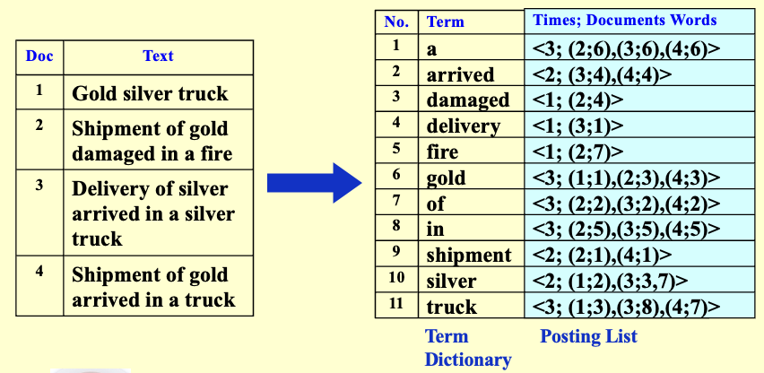
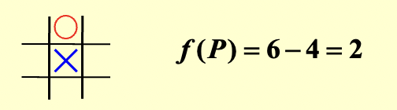
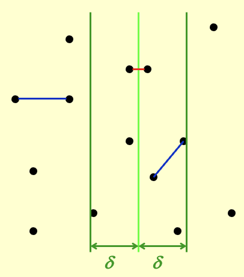
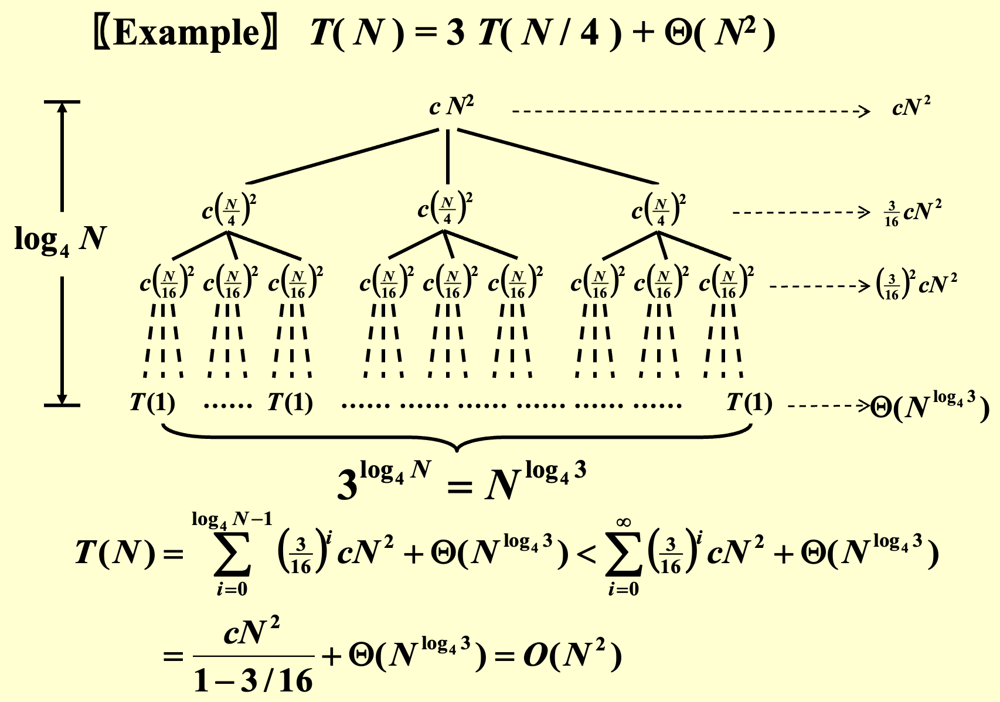
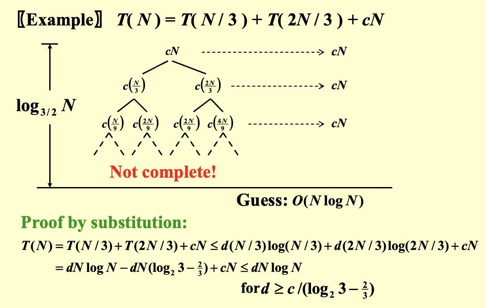
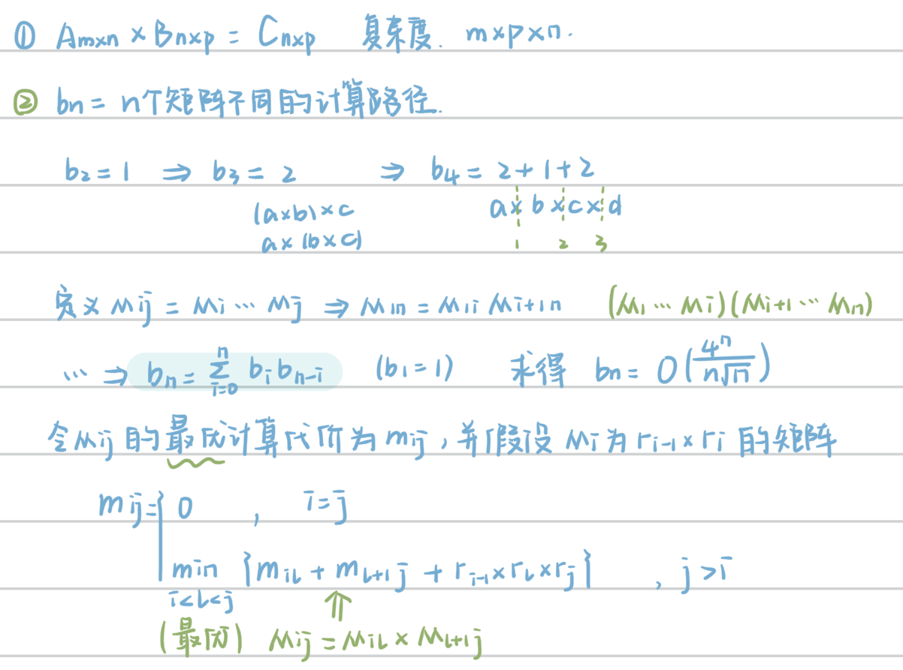
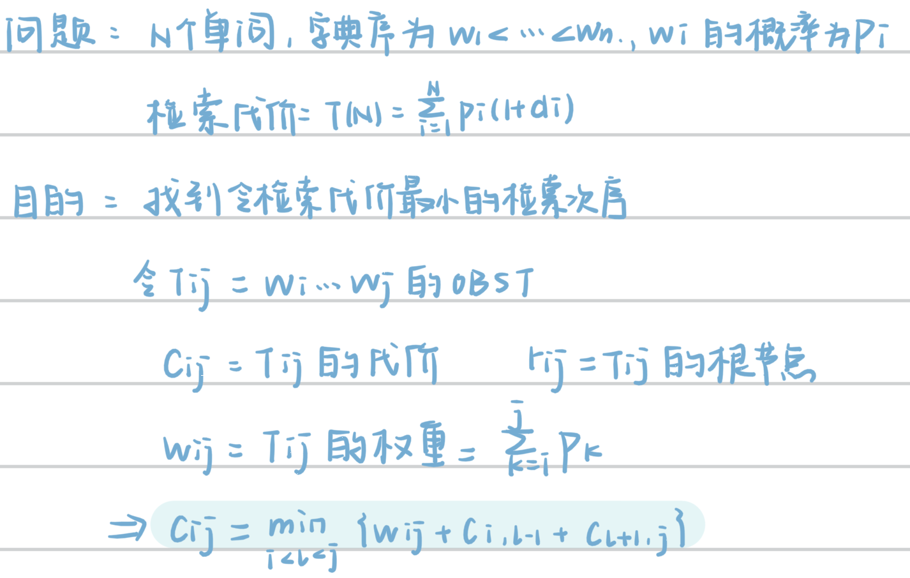
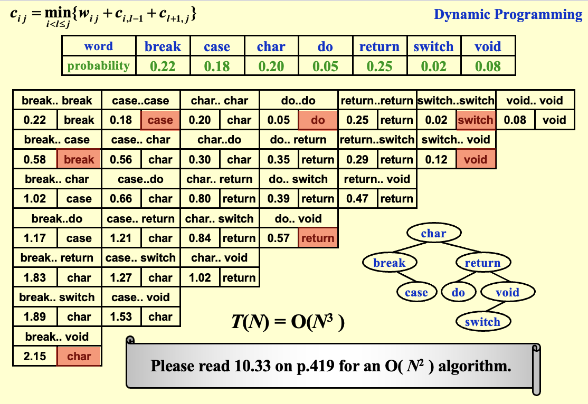

算法
摊还分析¶
- 目标：任意连续的 \(M\) 次操作最多需要 \(O(M \log N)\) 时间（其中 \(N\) 是数据规模）
- 有些数据结构的某些操作，单次执行可能很耗时，但这种耗时操作不会经常发生
- 摊还分析的目标是：把这些“偶尔昂贵”的操作成本，平均摊到多次操作中去，得出更合理的平均性能指标
- 摊还时间界（amortized time bound）：连续操作的平均最坏情况（总时间复杂度的上界）
- 最坏情况界 \(\geq\) 摊还界 \(\geq\) 平均情况界
- 方法
对于任意 \(n\)，一个包含 \(n\) 次操作的序列总共需要的最坏情况时间为 \(T(n)\)。因此，在最坏情况下，每次操作的平均成本（即摊还成本）为 \(T(n)/n\)
- 核心思想：
- 为每个操作分配一个摊还成本 \( \hat{c}_i \)，它可能高于或低于其实际成本 \( c_i \)
- 当一个操作的 \( \hat{c}_i \) 超过其 \( c_i \) 时，我们将差额作为信用（credit）分配给数据结构中的特定对象
- 这些信用可以用于支付后续那些摊还成本低于实际成本的操作
- 注意： 对于所有 \( n \) 次操作的序列，我们必须满足总摊还成本不低于总实际成本
Example
支持MultiPop的栈
实际成本 \( c_i \)：Push 为 1；Pop 为 1；MultiPop 为 \( \min(\text{sizeof}(S), k) \)
摊还成本 \( \hat{c}_i \)：Push 为 2；Pop 为 0；MultiPop 为 0
信用分配：
Push: +1（支付1单位实际成本，并留存1单位信用）；Pop: -1（使用1单位信用支付实际成本）；MultiPop: 每弹出一个元素使用1单位信用（因为实际成本为 \(k'\)，但摊还成本为0）。
由于栈大小 \( \text{sizeof}(S) \geq 0 \)，因此总信用始终非负。
- 定义：\( \Phi(D_i) \) 是数据结构在状态 \( D_i \) 下（执行第 \(i\) 次操作后）的势能函数
Notices
通常，一个好的势能函数应在操作序列开始时取最小值（即 \( \Phi(D_0) \) 最小）
- 公式：
Notices
由于 \( \Phi(D_n) - \Phi(D_0) \geq 0 \)，因此总摊还成本不低于总实际成本
Example
定义：
-
\( D_i \) = 第 \( i \) 次操作后的栈状态
-
势能函数：\( \Phi(D_i) = \) 栈 \( D_i \) 中的对象数量，显然，\( \Phi(D_i) \geq \Phi(D_0) =0\)
计算摊还成本：
- Push操作：
- Pop操作：
- MultiPop操作： 设实际弹出 \( k' = \min(\text{sizeof}(S), k) \) 个元素
因此，总摊还成本 \( \sum_{i=1}^n \hat{c}_i = O(n) \geq \sum_{i=1}^n c_i \)，摊还时间为 \( O(1) \)。
倒排索引¶
- 概念：由词查找文档
- 组成
- 词典：所有出现的单词
- 倒排表：出现该词的文档数+出现的位置（文档编号、文档中的位置编号）
Example

- 构建过程
| C | |
|---|---|
核心功能模块：
- 分词器
Token Analyzer - 停用词过滤
Stop Filter：过滤掉在搜索中没有实际意义的常见词，如"的"、"a"、"the" - 词汇表扫描器
Vocabulary Scanner - 词汇表插入器
Vocabulary Insertor - 内存管理
Memory management
- 文本预处理
- 词干提取（还原为词根）
- 去除停用词（
a,the...）
- 关键技术
-
词典数据结构：哈希表、搜索树
Pros & Cons
Hashing Search Trees 查找速度 平均 O(1)，非常快 O(log n)，较快但略慢于哈希 是否有序 无序，不支持范围或前缀查询 有序，可支持排序、范围查找、前缀匹配 内存利用率 可能浪费空间（哈希桶未满） 节点结构紧凑，空间利用率较高 插入/删除 操作简单，速度快 需要维护树的平衡，稍慢 扩展性 当数据量增大时可能需要重哈希（rehash） 可随数据量增长自然扩展 实现复杂度 简单 相对复杂（尤其是平衡树、Trie） 适用场景 精确匹配查询 排序查询、前缀查询、范围检索 总体评价 哈希速度快但功能有限 搜索树功能丰富但开销稍大 -
大规模数据处理：分区索引（词项分区索引、文档分区索引）
- 动态索引：更新现有词项或添加新词项、添加辅助索引（用于临时存储新文档）
- 性能优化
- 索引压缩：去除停用词、差分存储（利用文档ID之间的差值进行压缩，大多数间隙可以用远小于20位的位进行编码）
- 阈值检索（Thresholding）：
- 文档截断：仅返回权重最高的前X篇文档
- 不适用于布尔查询
- 由于截断，可能会遗漏部分相关文档
- 查询截断：按词项频率升序排序，选择性处理查询词项（优先选择较稀有的词项进行搜索）
- 文档截断：仅返回权重最高的前X篇文档
- 搜索引擎的衡量标准
- 索引速度有多快
- 搜索速度有多快
- 查询语言的表达性
- 用户满意度
- 数据检索性能评估（在确保正确性后）
- 响应时间
- 索引空间
- 信息检索性能评估：答案集的相关性
- 核心评估指标
- 精确率：P = 相关检索数 / 总检索数
- 召回率：R = 相关检索数 / 总相关文档数
- 核心评估指标
- 数据检索性能评估（在确保正确性后）
回溯算法¶
- 思路：通过系统地生成和检查部分候选解，并在确定该部分解不可能导向最终正确解时，提前放弃该分支（即剪枝），从而减少需要检查的候选解数量
- 代码模版
- 典型例题：
- 八皇后问题：在8×8棋盘上放置8个皇后，使得它们互不攻击（即不在同一行、列、对角线或反对角线）
-
收费公路重建问题
- 问题：给定 \( N(N-1)/2 \) 个点对之间的距离集合 \( D \)，重建点在 \( x \) 轴上的原始坐标序列 \( x_1 < x_2 < ... < x_N \)（已知 \( x_1 = 0 \)）
- 算法思路：
- 由距离个数确定点的数量 \( N \)
- 最大距离即为 \( x_N - x_1 \)，则 \( x_N = \max(D) \)
- 递归地尝试将剩余的最大距离放置在当前解集的最右端 \( X[\text{right}] \) 或最左端 \( X[\text{left}] \)
- 每次放置后，检查新产生的距离是否都在剩余距离集合 \( D \) 中，并更新 \( D \)
- 如果某条路径失败，则回溯，撤销该步的距离放置，恢复距离集合 \( D \)
代码
- 关键策略
-
最小最大策略：
- 通过递归地模拟双方的最佳走法，最终选择对己方最有利的路径
- e.g. 井字棋：人类玩家试图最小化局面的价值，而计算机则试图最大化它
-
为了量化一个局面的“好坏”，需要一个评估函数 \( f(P) \)
\[ f(P) = W_{\text{Computer}} - W_{\text{Human}} \]Tips

\( W_{\text{Computer}} \)：计算机在当前位置 所有可能获胜的路径 数量
\( W_{\text{Human}} \)：人类在当前位置 所有可能获胜的路径 数量
- \( f(P) \) 值越大，说明计算机的潜在优势越大，局面越好
- \( f(P) \) 值为正，表示计算机占优
- \( f(P) \) 值为负，表示人类占优
- \( f(P) = 0 \)，表示双方势均力敌
-
* Alpha-Beta 剪枝：对最小最大策略的优化，旨在减少需要搜索的节点数
- \(α\) 剪枝：在Max层，如果发现一个节点的值已经小于父节点已知的\(α\)值（当前路径已确保的最小收益），则可以剪掉该节点的剩余分支
- \(β\) 剪枝：在Min层，如果发现一个节点的值已经大于父节点已知的\(β\)值（当前路径对手已确保的最大损失），则可以剪掉该节点的剩余分支
- 采用深度优先的策略进行搜索
分而治之¶
- 通用递归式
其中 \(f(N)\) 代表将子问题的解合并成原问题
常见解
\( T(N) = 2T(N/2) + cN = O(N\log N) \)
\(T(N) = 2T(N/2) + cN^2 = O(N^2) \)
- 解决案例
- 最大子序列和: 时间复杂度 \(O(N \log N)\)
- 树的遍历: 时间复杂度 \(O(N)\)
- 归并排序和快速排序: 时间复杂度 \(O(N \log N)\)
最近点对问题
- 问题：给定平面上的 \(N\) 个点，找出距离最近的点对（如果两个点位置相同，则该点对即为最近点对，距离为0）
- 简单穷举搜索法：检查 \( N(N-1)/2 \) 个点对（时间复杂度 \( T = O(N^2) \)）
- 分而治之：按 \(x\) 坐标排序并进行划分，分成左半部分、右半部分以及跨越分割线的三部分解来递归求解
-
-
利用δ-strip求解：找到左半部分和右半部分中最短的一段距离，记为 \(\delta\) ，在 \((x-\delta, x+\delta)\) 的范围内寻找即可

跨越分割线的解法：
-
如果带状区域内的点数为 \( O(\sqrt{N}) \)，使用遍历，时间复杂度为 \( O(N) \)
-
最坏情况：带状区域内的点数为 \( N \)，遍历并不高效，采取优化策略
-
对于任意点 \( p_i \) ，最多只需要考虑7个点（因为这些点与 \( p_i \) 的距离小于 \(δ\)），从而时间复杂度 \( f(N) = O(N) \)
-
-
- 递归式求解方法
- 假设前提
- \(N = b^k\)
- 当 \(n\) 足够小时，\(T(n) = \Theta(1)\)
- 代入法：猜测解的形式，并用数学归纳法证明
-
递归树法：通过画递归树直观理解递归过程
递归树例题


-
主定理法：对于 \( T(N) = a \, T(N / b) + \Theta (N^k \log^p N) \)（其中 \( a \geq 1, \, b > 1, \) 且 \( p \geq 0 \)）
\[ T(N) = \begin{cases} O(N^{\log_b a}) & \text{若 } a > b^k \\ O(N^k \log^{p+1} N) & \text{若 } a = b^k \\ O(N^k \log^p N) & \text{若 } a < b^k \end{cases} \]主定理的几个形式
-
原定理：令 \( a \geq 1 \) 和 \( b > 1 \) 为常数，\( f(N) \) 是一个函数，\( T(N) \) 是在非负整数上由以下递归式定义：
\[ T(N) = aT(N/b) + f(N) \]- 如果对某常数 \( \epsilon > 0 \)，有 \( f(N) = O(N^{\log_b a - \epsilon}) \)，那么 \( T(N) = \Theta(N^{\log_b a}) \)
- 如果对某个 \( k \geq 0 \)，有 \( f(N) = \Theta(N^{\log_b a} \log^k N) \)，那么 \( T(N) = \Theta(N^{\log_b a} \log^{k+1} N) \)
- 如果对某常数 \( \epsilon > 0 \)，有 \( f(N) = \Omega(N^{\log_b a + \epsilon}) \)，并且满足 \( af(N/b) \leq cf(N) \)（对于某个 \( c < 1 \) 和所有足够大的 \( N \)），那么 \( T(N) = \Theta(f(N)) \)
-
简单形式：对于递归式 \( T(N) = aT(N/b) + f(N) \)
- 如果对于某个常数 \( k < 1 \)，有 \( af(N/b) = kf(N) \)，则 \( T(N) = \Theta(f(N)) \)
- 如果对于某个常数 \( K > 1 \)，有 \( af(N/b) = Kf(N) \)，则 \( T(N) = \Theta(N^{\log_b a}) \)
- 如果 \( af(N/b) = f(N) \)，则 \( T(N) = \Theta(f(N)\log_b N) \)
- 最终可用形式：见正文
-
动态规划 DP¶
Tips
需要大量做题！！！
- 基本思路：仅解决一次子问题，并保存子问题的解，避免重复计算
- 设计算法的步骤
- 明白问题的最优解和子问题最优解的关系
- 列出最优解的递推式
- 选择计算顺序，计算最优解
- 重新构建解决方案
- 常见问题
- 时间复杂度：\( O(N) \)
- 问题根源：冗余计算呈爆炸式增长
- 解决方案：记录最近计算的两个值以避免递归调用（记忆化搜索）
code
- 时间复杂度：三层嵌套循环\( O(N^3) \)
- 空间复杂度：二维DP表 \( O(N^2) \)
- 思路：一个问题的最优答案利用子问题的最优答案得到
- 解答：
已知
对于矩阵乘法 \(A_{m \times n} \times B_{n \times p} = C_{n \times p}\) ，时间复杂度为 \(m \times p \times n\)
定义
- \(b_n\)：表示 \(n\) 个矩阵相乘的不同计算路径的个数，e.g. \(b_1 = 1, b_2 = 1, b_3 = 2, b_4 = 5\)
- \(M_i\)：\(r_{i-1} \times r_i\) 的矩阵
- \(M_{ij} = M_i ... M_j\)
- \(m_{ij}\)：表示矩阵 \(M_{ij}\) 的最优计算代价
-
\(b_n\) 的递推式
\[ b_n = \sum_{i=0}^{n} b_i b_{n-i} \]解得
\[ b_n = O(\frac{4^n}{n \sqrt{n}}) \] -
\(m_{ij}\) 的递推式
\[ m_{ij} = \begin{cases} 0 & i=j \\ \min_{i<l<j} {m_{il} + m_{l+1}_{j} + r_i-1 r_l r_j} & i<j \end{cases} \]
code
note

- 时间复杂度：\( O(N^3) \)）
note

example

- 思路：对于从i到j的路径，考虑新引入的顶点k：
- 不经过k：保持原最短路径
- 经过k：路径分解为 i→k 和 k→j
- 时间复杂度：\( O(N^3) \)）